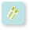
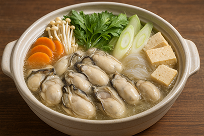

東京都青梅市奥多摩むかし道
集めた食材は 6 点です

東京都青梅市奥多摩むかし道ルートのお料理
ひらがな
料理名
広島県の郷土料理で、鍋の土手のように味噌を塗って食べる「かきの土手鍋」が有名です。牡蠣の旨味と味噌の風味が合わさった温まる料理です。
【材料】(4人前)
- かき（むき身）200g
- 白菜7枚（正味700g）
- にんじん2/3本（正味100g）
- 長ねぎ1本（正味100g）
- にら1束（正味100g）
- しいたけ4枚
- 水4カップ
- 丸鶏がらスープのもと大さじ2・1/2
【作り方】
- かきはザルに入れて塩少々（分量外）をふって、 ボウルに入れ、水を２～３回取り替えながら ふり洗いをし、水気をきる。
- 白菜は芯と葉に分け、 芯は４ｃｍ幅のそぎ切りにし、葉は４ｃｍ幅に切る。 にんじんは大きめの短冊切りにし、 ねぎは３ｍｍ幅の斜め切りにする。 にらは５ｃｍ長さに切り、 しいたけは２等分のそぎ切りにする。
- 鍋に水と鶏がらスープのもとを入れて火にかけ、煮立ったら、 白菜の芯・にんじん・ねぎ・しいたけ・白菜の葉 ・かきの順に加えて煮る。具材に火が通ったら、 にらを加えてサッと煮る。
- 完成